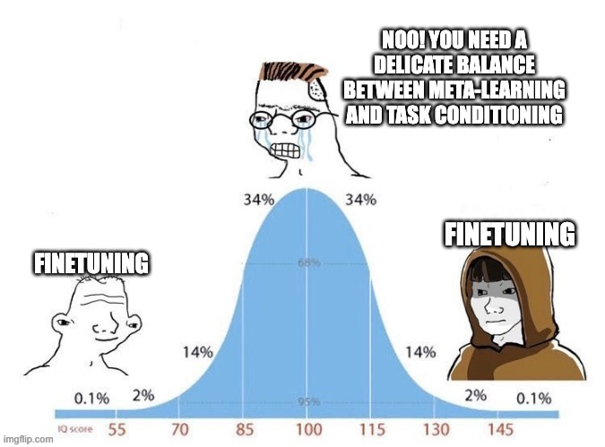
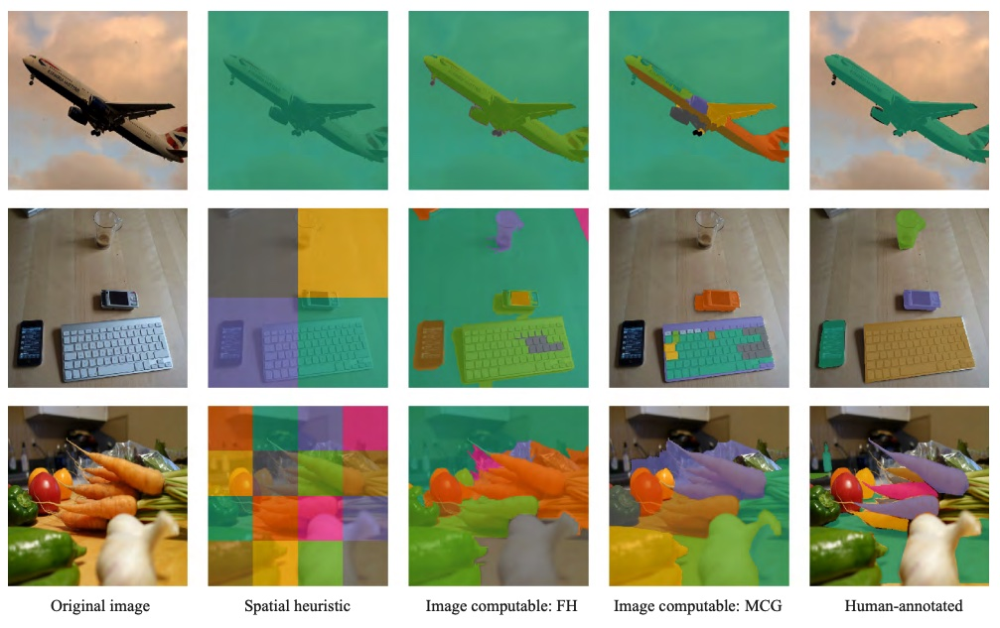
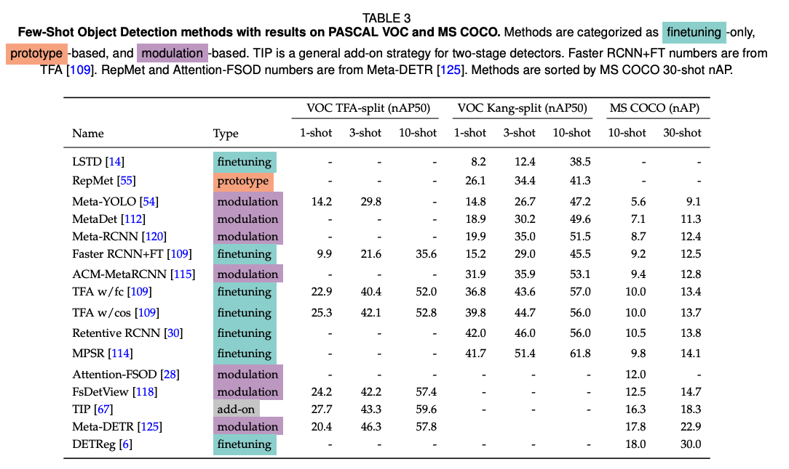
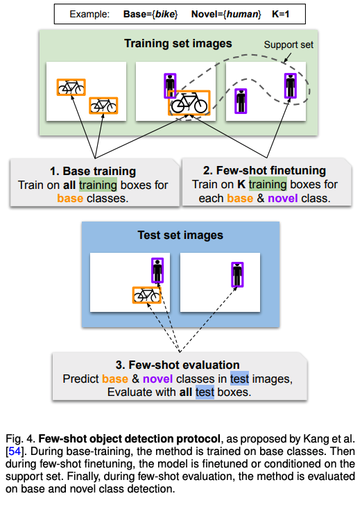
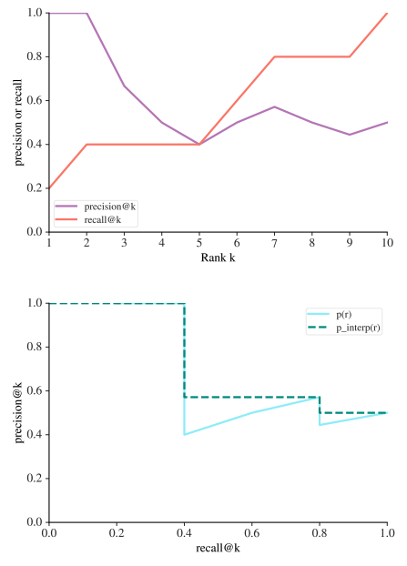
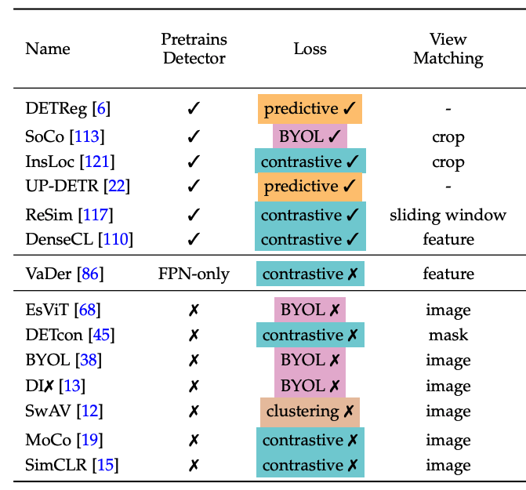

A Survey on Few-Shot and
Self-Supervised Object Detection
Gabriel Huang, Issam Laradji, David Vazquez, Simon Lacoste-Julien, Pau Rodriguez

[arXiv] [PDF] [Awesome-FSOD]
Abstract
Labeling data is often expensive and time-consuming, especially for tasks such as object detection and instance segmentation, which require dense labeling of the image. While few-shot object detection is about training a model on novel (unseen) object classes with little data, it still requires prior training on many labeled examples of base (seen) classes. On the other hand, self-supervised methods aim at learning representations from unlabeled data which transfer well to downstream tasks such as object detection. Combining few-shot and self-supervised object detection is a promising research direction. In this survey, we review and characterize the most recent approaches on few-shot and self-supervised object detection. Then, we give our main takeaways and discuss future research directions.
Tweetorial
Our tweetorial is summarized below for your convenience. Click on paragraph titles or images for quick links to relevant paper section.- The current disorganization of self-supervised
and few-shot object detection have led to *two* Meta-RCNN papers 😱!
Also, did you know that you can boost your 1-shot Pascal performance by 57% simply by changing your evaluation procedure?
Here we propose a survey to fix it!
Bonus: we also provide lots of interesting insights and future directions.
- Finetuning is a strong baseline. Despite increasingly sophisticated conditioning-based methods being proposed, fine-tuning remains a very strong baseline (TFA, MPSR, DETReg). In fact, most if not all conditioning-based methods perform better when finetuned.
 - Heuristics can generate weak labels. Several self-supervised methods now rely on training-free computer vision heuristics as training signal. DETReg and SoCo use Selective Search to generate object crops; DETCon compare several heuristics for feature pooling (below) 
- Transformers are everywhere. Transformer detection heads such as DETR are increasingly popular due to their simplicity and ability to be trained end-to-end. Moreover, DINO showed that visual transformer backbones can learn semantic segmentation maps without any supervision.
- LEARN HOW I INCREASED MY PASCAL 1-SHOT PERFORMANCE BY 57% WITHOUT DOING ANY WORK! That’s right, this is how much discrepancy between benchmarking on Kang’s splits and TFA’s split. In the future, please report those numbers in *separate* columns like below! Also, why does everyone keep using Pascal & COCO trainval as training set and test as validation, instead of using train/val/test splits properly? Find our recommended best practices in the paper! 
- Few-shot classification vs detection. Coming from few-shot *classification* and being used to the N-way K-shot episodic framework, I was very confused at first with the few-shot *object detection* framework, which in many ways is closer to transfer learning. We explain the differences between the two in-depth. 
- Do you actually know how mAP is computed? Evaluating object detectors —let alone few-shot object detectors— is a nontrivial task. Check out our survey to learn the difference between Pascal VOC and COCO-style mean average precision and how to compute them! 
- Self-supervision *for* object detection. Beyond initializing the backbone with MoCo/SimCLR/SwaV, several works now attempt to pretrain the detection heads as well. This seems most useful on few-shot and low-data (e.g. 1%, 5%, 10% COCO) scenarios. Currently one of the top methods, DETReg uses self-supervised representations for few-shot object detection. 
-
Related tasks. Let’s keep a close eye on the related work: zero-shot object detection, weakly-supervised object detection, (few-shot) semantic and instance segmentation, visual commonsense/question answering/captioning, (few-shot) video detection and tracking, multimodal approaches, and more!

Read on Twitter
1/9. The current disorganization of self-supervised and few-shot object detection have led to *two* Meta-RCNN papers 😱! Here we propose a survey to fix it! Bonus: we also provide lots of interesting insights and future directions. https://t.co/aw935vimD2 pic.twitter.com/xlrhammDIu
— Gabriel Huang (@GabrielHuang9) November 2, 2021
Citation
If our paper was useful to you, please cite us!@article{huang2021survey,
title={A Survey of Self-Supervised and Few-Shot Object Detection},
author={Huang, Gabriel and Laradji, Issam and Vazquez, David and Lacoste-Julien, Simon and Rodriguez, Pau},
journal={arXiv preprint arXiv:2110.14711},
year={2021}
}